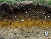

soil
matter

Source: Wikipedia
Wikipedia Page (Something wrong with this association? Let us know.)
Wikidata Page (Something wrong with this association? Let us know.)
Occurs in:
- land_surface_soil_water__volume_fraction
- land_surface~0-to-10cm-below_soil_water__volume_fraction
- land_surface~100-to-200cm-below_soil_water__volume_fraction
- land_surface~10-to-40cm-below_soil_water__volume_fraction
- land_surface~40-to-100cm-below_soil_water__volume_fraction
- land_surface~0-to-100cm-below_soil_water__volume_fraction
- land_surface~0-to-10cm-below_soil__temperature
- land_surface~100-to-200cm-below_soil__temperature
- land_surface~10-to-40cm-below_soil__temperature
- land_surface~40-to-100cm-below_soil__temperature
- soil__downward_component_of_heat_energy_flux
- soil_water__van-genuchten_alpha_parameter
- soil__residual_porosity
- soil_macropores_below-land_surface__depth
- soil_macropores_water__vertical_component_of_hydraulic_conductivity
- soil_layer~topmost__thickness
- soil_layer~topmost_water_infiltration__thickness
- soil~saturated_water__vertical_component_of_hydraulic_conductivity
- soil_water__volume-per-area_concentration
- soil_water_interception__volume-per-area_storage_capacity
- land_surface_soil_conduction__heat_energy_flux
- model_soil_layer__count
- model_soil_layer~0__porosity
- model_soil_layer~0~saturated__thickness
- model_soil_layer~0__thickness
- model_soil_layer~1__porosity
- model_soil_layer~1~saturated__thickness
- model_soil_layer~1__thickness
- model_soil_layer~2__porosity
- model_soil_layer~2~saturated__thickness
- model_soil_layer~2__thickness
- soil_freezing__depth
- soil__heat_capacity_ratio
- soil__mass-per-volume_density
- soil_particle__mass-per-volume_density
- soil_bulk__mass-per-volume_density
- soil_isobaric-process__mass-specific_heat_capacity
- soil_isochoric-process__mass-specific_heat_capacity
- soil__fluid_permeability
- soil__porosity
- soil_at-reference-depth__temperature
- soil~saturated__hydraulic_conductivity
- soil__absolute_permeability
- soil__temperature
- soil_at-temperature__reference_depth
- soil_thawing__depth
- soil__thermal_conductivity
- soil__thermal_diffusivity
- soil__thermal_inertia
- soil__thermal_resistivity
- soil__thickness
- soil__time_derivative_of_hydraulic_conductivity
- soil_void__volume_ratio
- soil_isobaric-process__volume-specific_heat_capacity
- soil_isochoric-process__volume-specific_heat_capacity
- soil_active-layer__porosity
- soil_active-layer~saturated__thickness
- soil_active-layer__thickness
- soil_air__volume_fraction
- bedrock_top_from-soil_surface__depth
- soil_clay__mass_fraction
- soil~oven-dried_clay__mass_fraction
- soil_clay__volume_fraction
- soil_ice__mass_fraction
- soil_ice__volume_fraction
- soil_ice_thawing-front__depth
- soil_layer~topmost__porosity
- soil_layer~topmost~saturated__thickness
- soil_loam__mass_fraction
- soil~oven-dried_loam__mass_fraction
- soil_loam__volume_fraction
- soil_macropores__cutoff_depth
- soil_macropores~saturated__horizontal_component_of_hydraulic_conductivity
- soil_macropores~saturated__vertical_component_of_hydraulic_conductivity
- soil_macropores__volume_fraction
- soil_matter~organic__mass_fraction
- soil~oven-dried_matter~organic__mass_fraction
- soil_matter~organic__volume_fraction
- soil_permafrost__thickness
- soil_permafrost_bottom__depth
- soil_permafrost_top__depth
- soil_regolith-layer__thickness
- soil_rhizosphere__thickness
- soil_sand__mass_fraction
- soil~oven-dried_sand__mass_fraction
- soil_sand__volume_fraction
- soil_phreatic-zone_top__depth
- soil_silt__mass_fraction
- soil~oven-dried_silt__mass_fraction
- soil_silt__volume_fraction
- soil_surface_water_infiltration__domain_time_integral_of_volume_flux
- soil_surface_water_infiltration__mass_flux
- soil_surface_water_infiltration__volume_flux
- soil_surface_water_infiltration__potential_volume_flux
- soil_surface_water_infiltration__time_integral_of_volume_flux
- soil_surface_water__volume_fraction
- soil~air-dried_water__pressure_head
- soil_water__atterberg_activity_index
- soil_water_atterberg-liquid-limit__volume_fraction
- soil_water__atterberg_liquidity_index
- soil_water_atterberg-plastic-limit__volume_fraction
- soil_water__atterberg_plasticity_index
- soil_water_atterberg-shrinkage-limit__volume_fraction
- soil_water__brooks-corey-smith_c_parameter
- soil_water__brooks-corey-smith_pressure_head_offset_parameter
- soil_water__brooks-corey_b_parameter
- soil_water__brooks-corey_eta_parameter
- soil_water__brooks-corey_lambda_parameter
- soil_water__bubbling_pressure_head
- soil_water__mass_diffusivity
- soil_water__effective_hydraulic_conductivity
- soil~saturated_water__effective_hydraulic_conductivity
- soil_water_at-field_capacity__pressure_head
- soil_water_at-field_capacity__volume_fraction
- soil_water__green-ampt_capillary_length
- soil_water__hydraulic_conductivity
- soil_water__hygroscopic_pressure_head
- soil_water__hygroscopic_volume_fraction
- soil_water_infiltration__mass_flux
- soil_water_infiltration__volume_flux
- soil_water__initial_hydraulic_conductivity
- soil_water__initial_normalized_volume_fraction
- soil_water__initial_volume_fraction
- soil_water__mass_fraction
- soil_water__normalized_hydraulic_conductivity
- soil_water__normalized_volume_fraction
- soil~oven-dried_water__mass_fraction
- soil~oven-dried_water__pressure_head
- soil_water__philip_sorptivity
- soil_water_infiltration__potential_volume_flux
- soil_water__pressure_head
- soil_water_at-pressure-head__reference_depth
- soil_water_at-reference-depth__pressure_head
- soil_water__relative_hydraulic_conductivity
- soil_water__residual_volume_fraction
- soil~saturated_water__hydraulic_conductivity
- soil~saturated_water__volume_fraction
- soil_water__smith-parlange_gamma_parameter
- soil_water__van-genuchten_alpha_parameter
- soil_water__van-genuchten_m_parameter
- soil_water__van-genuchten_n_parameter
- soil_water__van-genuchten_alpha_parameter
- soil_water__volume_fraction
- soil_water~wilting-point__pressure_head
- soil_water~wilting-point__volume_fraction
- soil_water_flowing__azimuth_angle_of_darcy_velocity
- soil_water_flowing__elevation_angle_of_darcy_velocity
- soil_water_flowing__x_component_of_darcy_velocity
- soil_water_flowing__y_component_of_darcy_velocity
- soil_water_flowing__z_component_of_darcy_velocity
- soil_water_frost-front__depth
- soil_water_phreatic-zone__thickness
- soil_water_phreatic-zone_top__depth
- soil_phreatic-zone_top_water_recharge__domain_time_integral_of_volume_flux
- soil_water_phreatic-zone_top__offset_depth
- soil_phreatic-zone_top_water_recharge__mass_flux
- soil_phreatic-zone_top_water_recharge__volume_flux
- soil_phreatic-zone_top_water_recharge__time_integral_of_volume_flux
- soil_water_phreatic-zone_top_surface__elevation
- soil_water_phreatic-zone_top_surface__initial_elevation
- soil_water_phreatic-zone_top_surface__slope
- soil_water_phreatic-zone_top_surface__x_derivative_of_elevation
- soil_water_phreatic-zone_top_surface__y_derivative_of_elevation
- soil_water_vadose-zone__thickness
- soil_water_wetting-front__depth
- soil_x-section~horizontal_macropores__area_fraction
- soil_x-section~vertical_macropores__area_fraction
- soil_fertilizer_fertilization__time
- soil_fertilizer_application__depth
- soil_layer__initial_depth
- soil_layer_water__initial_volume_fraction
- soil~dry_ammonium-as-nitrogen~elemental__mass_fraction
- soil~dry_nitrate-as-nitrogen~elemental__mass_fraction
- soil_layer__thickness
- soil_surface_water_evaporation__volume_flux
- soil_surface_water_irrigation__volume_flux
- soil_surface_water_runoff__volume_flux
- soil_rock__volume_fraction
- soil_base-layer__depth
- soil_layer~1_water__volume_fraction
- soil_as-nitrogen_denitrification__average_of_mass_rate
- soil_as-nitrogen_nitrification__average_of_mass_rate
- soil_surface_water_evaporation__time_integral_of_volume_flux
- soil_water__lower_limit_of_volume_fraction
- soil~drained_water__upper_limit_of_volume_fraction
- soil_plant_residue_water_evaporation__volume_flux
- biomass~microbial-and-soil_pool~organic~stabilized-as-nitrogen__mass-per-area_density
- biomass~microbial-or-soil_pool~organic~stabilized_nitrogen_immobilization__gross_mass-per-area_density
- crop_biomass~microbial-and-soil_decomposition_carbon_respiration__mass
- biomass~microbial-and-soil~stabilized_decomposition_carbon_respiration__mass_rate
- soil~no-rock~dry__mass-per-volume_density
- soil_carbon_pool~stabilized_carbon__one-year_change_of_mass
- soil_carbon_pool~stabilized_carbon__year-end_mass
- soil_carbon_pool~stabilized_carbon__year-start_mass
- soil_carbon_pool~stabilized_carbon__final_mass
- soil_carbon_pool~stabilized_carbon__change_of_mass
- soil_carbon_pool~stabilized_carbon__initial_mass
- soil_layer_bulk__mass-per-volume_density
- soil_layer_carbon~stabilized__mass_fraction
- soil_layer_matter~organic~stabilized_carbon__mass_fraction
- soil_carbon_pool~microbial-and-stabilized_carbon~decomposed_addition__mass_rate
- soil_clay_particle__volume_fraction
- land_soil~dry_surface__albedo
- soil_as-nitrogen_denitrification_nitrous-oxide-as-nitrogen_emission__mass-per-area_density
- soil_as-nitrogen_nitrification_nitrous-oxide-as-nitrogen_emission__mass-per-area_density
- soil_as-nitrogen_denitrification_nitrous-oxide-as-nitrogen_emission__average_of_mass_rate
- soil_as-nitrogen_nitrification_nitrous-oxide-as-nitrogen_emission__average_of_mass_rate
- soil_nitrous-oxide-as-nitrogen_emission__average_of_mass_rate
- soil~no-rock_silt__mass_fraction
- soil~moist_layer_bulk__mass-per-volume_density
- soil_profile_bottom_water_drainage__volume_flux
- soil_profile_nitrate-as-nitrogen__mass-per-area_density
- soil_profile_bottom_water_drainage_ammonium_leaching__time_integral_of_mass_flux
- soil_profile_bottom_water_drainage_nitrate_leaching__time_integral_of_mass_flux
- soil_profile_ammonium-as-nitrogen__mass-per-area_density
- soil_pool~stabilized_carbon__change_of_mass
- above-ground_soil_residue_pool_crop_residue_addition__mass-per-area_density
- soil_pool-and-pool~microbial_carbon~decomposed_addition__mass
- soil_surface_residue~standing_carbon_nitrogen__mass_ratio
- land_surface~0-to-10cm-below_soil_water__month-specific_anomaly_of_volume_fraction
- land_surface~0-to-100cm-below_soil_water__month-specific_anomaly_of_volume_fraction
- land_surface~0-to-10cm-below_soil_water__mass-per-area_density
- land_surface~10-to-40cm-below_soil_water__mass-per-area_density
- land_surface~40-to-100cm-below_soil_water__mass-per-area_density
- land_surface~100-to-200cm-below_soil_water__mass-per-area_density
- soil_rhizosphere_water__mass-per-area_density
- land_surface_soil~bare_water_evaporation~direct__energy_flux
- atmosphere_soil_water_evapotranspiration__thornthwaite_potential_volume
- land_surface_soil_water__volume-per-area_storage_density
- soil_vadose-zone_water__volume-per-area_storage_density
- land_surface_soil_water_evaporation__volume_flux